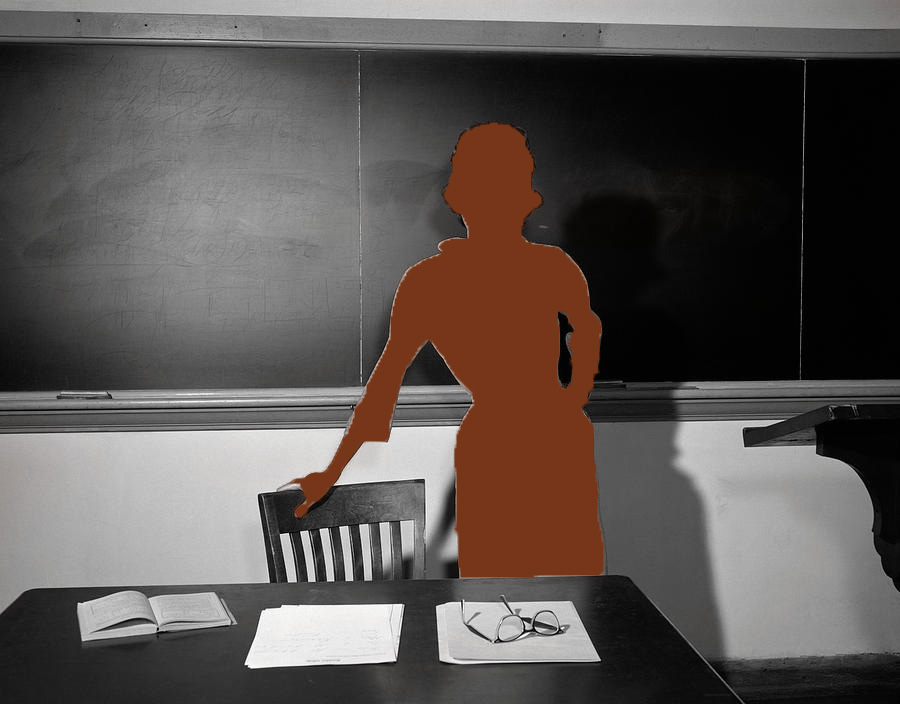

<!DOCTYPE html>
<html lang="en">
    <head>
        <meta charset="UTF-8" />
        <title>Perfect Mask</title>
    </head>
    <body></body>
</html>

<!DOCTYPE html>
<html lang="en">
<head>
  <meta charset="UTF-8">
  <meta name="viewport" content="width=device-width, initial-scale=1.0">
  <title>Perfect Mask</title>
  <style>
    body {
      font-family: Arial, sans-serif;
      background: #e3e3c8;
      margin: 0;
      line-height: 1.6;
    }
    header {
      background: #c75209;
      color: #e3e3c8;
      padding: 1rem;
      text-align: center;
    }
    nav {
      background: #1b7e8e;
    }
    nav ul {
      list-style: none;
      margin: 0;
      padding: 0;
      display: flex;
      flex-wrap: wrap;
      justify-content: center;
    }
    nav ul li {
      margin: 0.5rem;
    }
    nav ul li a {
      color: #e3e3c8;
      text-decoration: none;
      padding: 0.5rem 1rem;
      background: #0f434d;
      border-radius: 4px;
      transition: background 0.3s;
    }
    nav ul li a:hover {
      background: #666;
    }
    main {
      padding: 2rem;
    }
    section {
      margin-bottom: 2rem;
    }
    footer {
      background: #1b7e8e;
      color: #e3e3c8;
      text-align: center;
      padding: 1rem;
    }
  </style>
</head>
<body>
  <header>
    <h1>Lane's Portfolio</h1>
    <p>Archive of Digital Works</p>
  </header>

<nav>
  <ul>
    <li><a href="index.html">Home</a></li>
    <li><a href="pixelated.html">Pixelated</a></li>
    <li><a href="perfect-mask.html">Perfect Mask</a></li>
    <li><a href="glitch-grit.html">Glitch n Grit</a></li>
    <li><a href="what-if.html">What if?</a></li>
  </ul>
</nav>

  <main>
    <section id="Perfect Mask">
      <h2>Perfect Mask</h2>
      
      
      <h3>Description</h3>
      <p>The Prompt for this project was to recreate a collage in the style of John Baldessari.</p>
      <h3>Tools</h3>
      <p>Adobe Photoshop, Masking Layers</p>
      <h3>Process Documentation</h3>
      <p>Finding images in the correct style was difficult for this project.</p>
      <h3>Reflection</h3>
      <p>During this project I found it fun to revisit the artist John Baldessari’s style as he was covered in a previous course I had taken a few semesters prior to this project. While working I didn't run into a lot of issues as the project seemed to use simple aspects of photoshop such as masking layers and the lasso tool. As mentioned in the notes above I did run into a few issues when searching images in the exact style specified within the project. As it seems a lot of modern day photos have since been created in the style of older time frames.</p>
  </main>

  <footer>
    <p>&copy; 2025 Lane Adams</p>
  </footer>
</body>
</html>